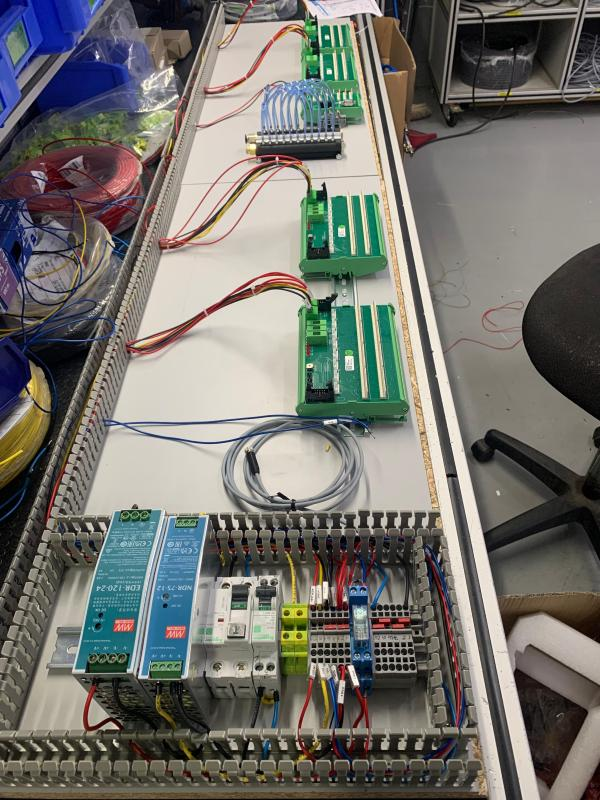
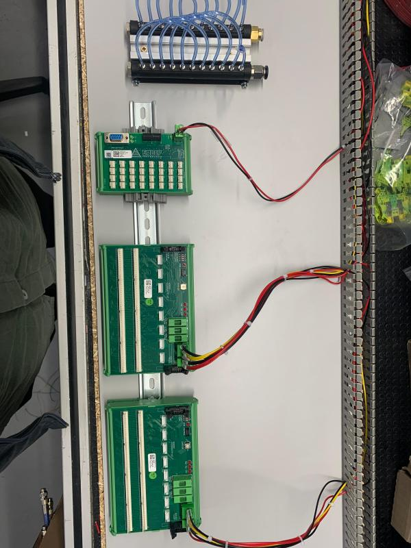
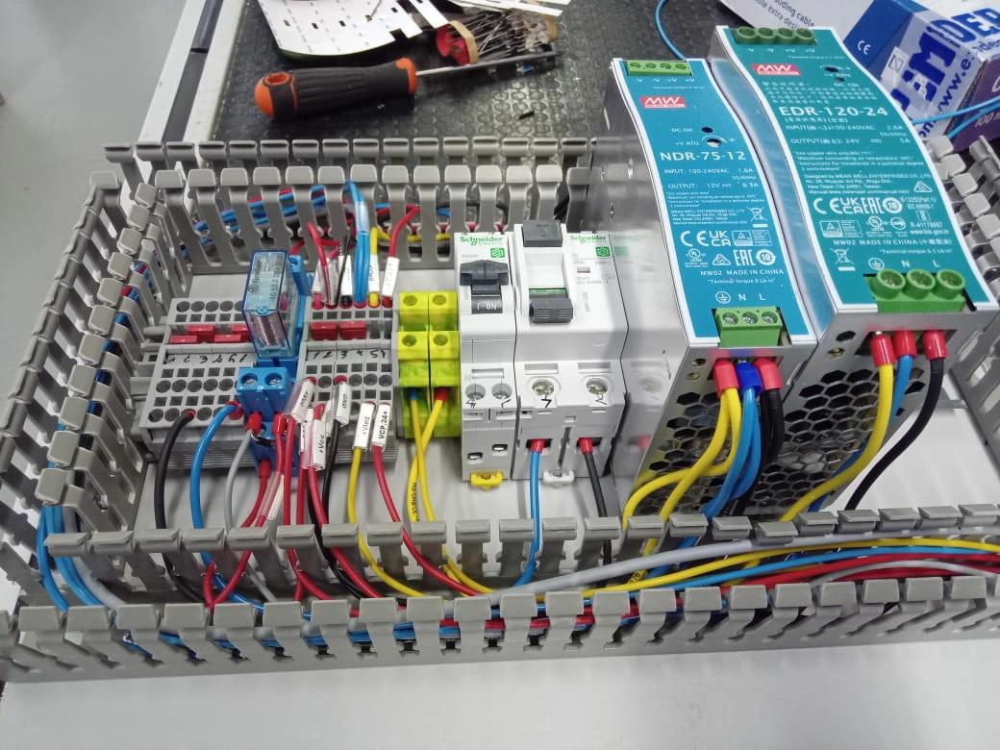
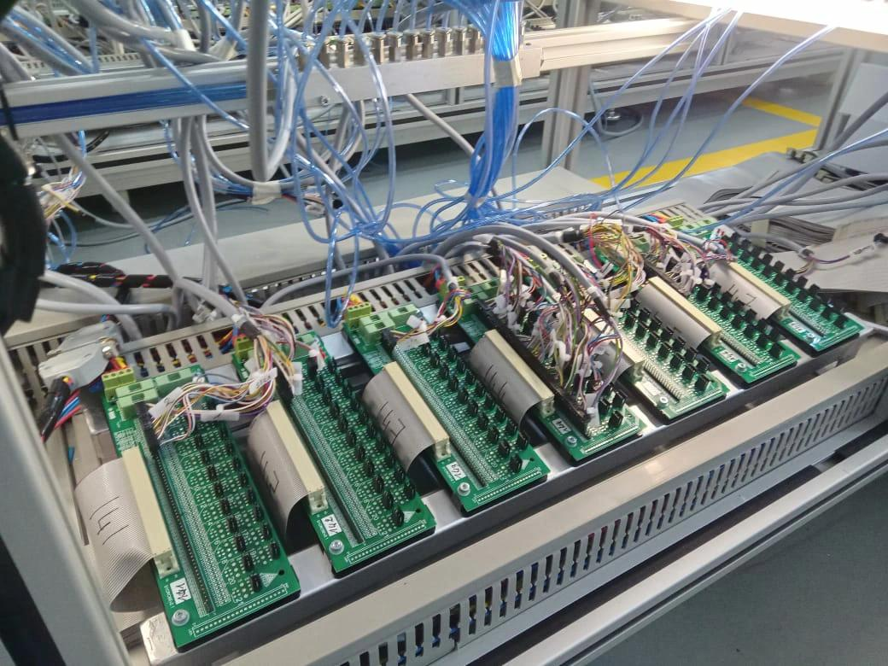
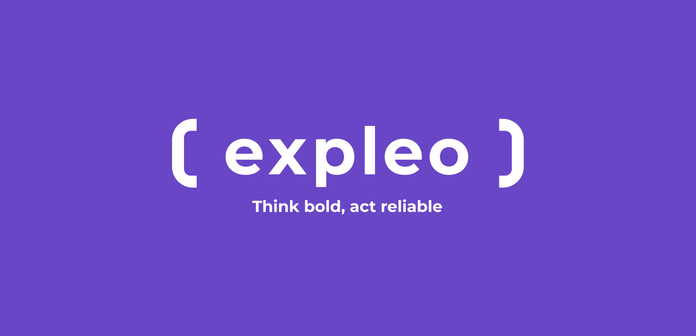
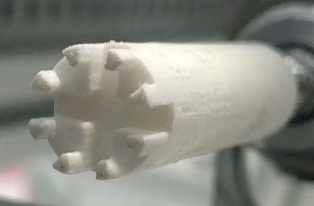
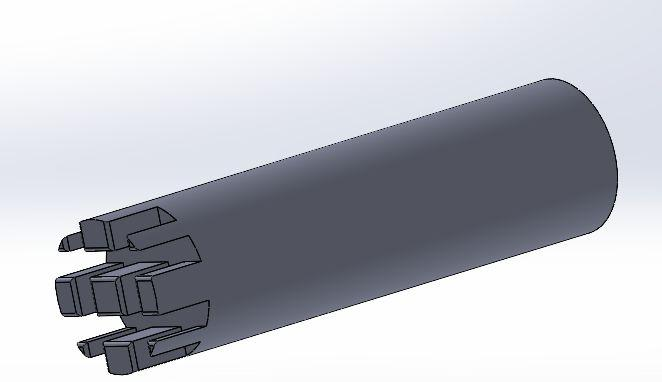
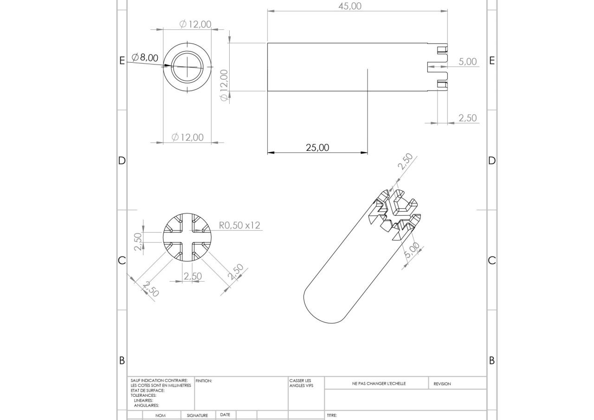

Mes Expériences

Stage Libre : Technicien maintenance du test électrique
04 Juil. 2025 – 06 Août. 2025 | EMDEP-Tanger, Maroc
Optimisation et mise en service des bancs de test (électrification, déclaration de cartes électroniques) avec ajustement des contreparties selon le layout et les besoins clients.





Stage de fin d’études : Assistant technique diagnostic automobile
16 Sep. 2024 – 27 Déc. 2024 | Département PCPR, Expleo – Tanger, Maroc
Projet : Modélisation du système Anti-Bloque Système sous MATLAB.
Expertise technique (diagnostic et résolution de pannes électriques/électroniques sur calculateurs moteur) et formation des nouveaux agents.


Stage d’initiation : Technicien Maintenance du test
17 Janv. 2023 – 08 Avr. 2023 | Département Vistronique, Valeo Lighting Vision – Tanger, Maroc
Maintenance Préventive (SMD - Front End)
- Maintenance des machines de production : Réalisation du nettoyage, graissage et vérification des câbles sur les machines clés (Lasering, SPV Panasonic, SPI CyberOptic, Pick & Place, Four Ersa Hotflow, AOI).
- Optimisation des équipements : Nettoyage spécifique des buses (Nozzles), tables de support et boîtiers de refroidissement.
- Contrôle qualité thermique : Réalisation d'études de profils thermiques pour garantir l'intégrité du soudage des composants.
- Suivi technique : Renseignement et suivi rigoureux des check-lists de maintenance préventive.
Maintenance Corrective et Analyse (Back End)
- Diagnostic ICT (In-Circuit Test) : Analyse et résolution des problèmes de test analogique/numérique sur le projet P2JO_RL (capacitances, résistances, court-circuit).
- Intervention technique : Remplacement de composants critiques sur les fixtures de test (relais Omron, pins de test par CAD, cartes ICA).
- Gestion des défauts : Analyse comparative entre "Vrais défauts" et "Faux défauts" en fonction des tolérances et standards composants (TDK, Murata, etc.).
Amélioration Continue et Sécurité
- Audit de sécurité : Contrôle et mise en place des dispositifs de sécurité (arrêts d’urgence, switchs interlocking) pour la protection des opérateurs.
- Conception technique (SolidWorks) : Réalisation de modèles 3D pour l'amélioration de l'outillage (Pusher, guide PCB).
- Qualité : Participation aux audits journaliers (Daily Audit) et suivi des alertes qualité pour la réduction du Scrap (rebuts).



